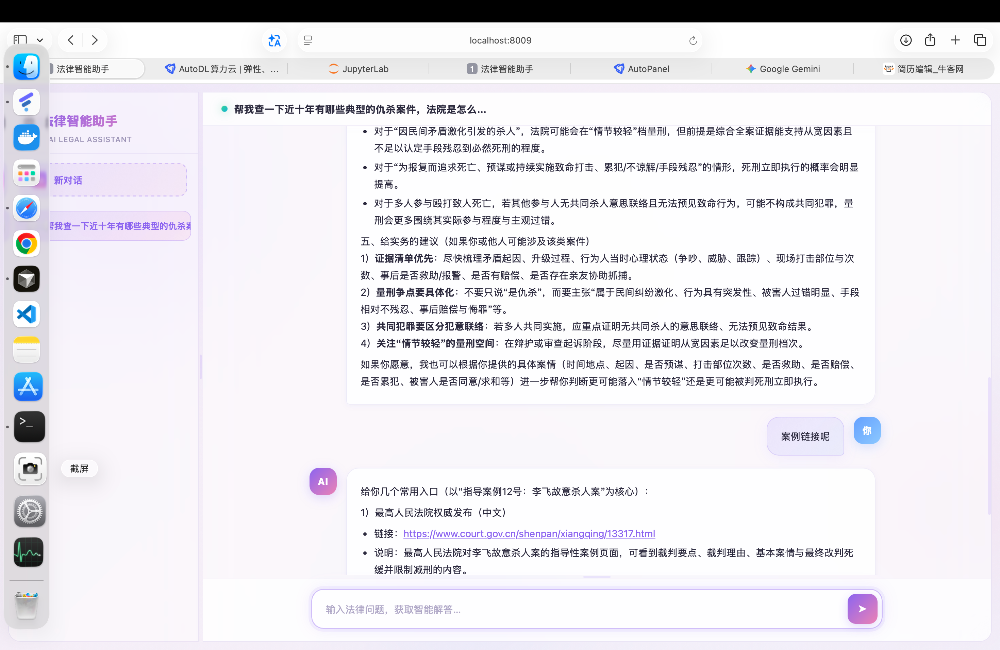
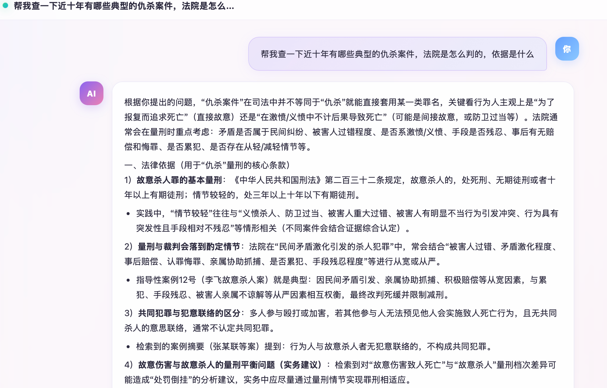
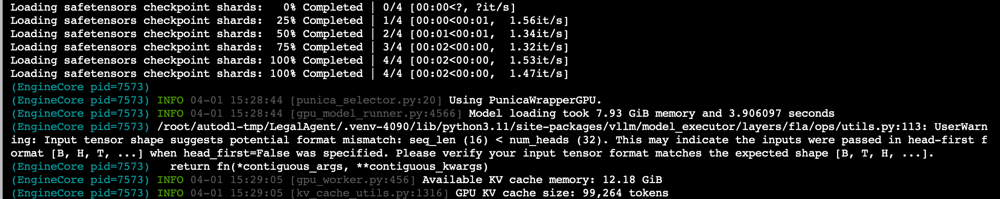
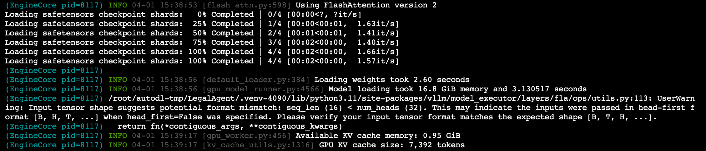

LegalAgent
基于 LangGraph 的多智能体法律咨询系统
┌─────────────────┐
│ Chat UI :8009 │
└────────┬────────┘
│ SSE
┌────────▼────────┐
│ Agent API :8008 │
│ (LangGraph) │
└──┬─────┬─────┬──┘
│ │ │
┌────────────┘ │ └────────────┐
▼ ▼ ▼
┌─────────────┐ ┌──────────────┐ ┌──────────────┐
│ PostgreSQL │ │ vLLM :8888 │ │ Tavily API │
│ + pgvector │ │ Qwen3.5-9B │ │ (联网搜索) │
└─────────────┘ └──────────────┘ └──────────────┘
技术栈：LangGraph / Qwen3.5-9B + LoRA / vLLM / PostgreSQL + pgvector / jieba BM25 + BGE + Reranker / FastAPI SSE / Docker Compose


▼ 一、Agent 架构设计
▼ 选型思路
想做的是一个可追溯、有记忆、能联网的法律助手——模型不确定时去查法条，查到了引用，查不到就说查不到。市面上方案要么没知识库（编法条）、要么没记忆（每次重述背景）、要么不可控。
| 方案 | 优势 | 问题 |
|---|---|---|
| LangChain Agent | 简单快速 | 单链执行，无法暂停/恢复 |
| AutoGen | 多 Agent 对话 | 太重，对话不可控 |
| CrewAI | 角色分工 | 自由度低，定制难 |
| LangGraph | 状态机+图结构，完全可控 | 学习成本高 |
选 LangGraph 的核心原因：interrupt/resume 天然支持多轮对话、checkpoint 持久化到 PostgreSQL、store 实现跨会话长期记忆、路由完全由代码控制不靠 LLM 猜。
▼ 图结构与路由
START ──► manager ──► route
▲ ├─► retriever ──► manager (法律检索)
│ ├─► memory ──► manager (记忆提取)
│ ├─► tavily ──► manager (联网搜索)
│ ├─► short_mem ──► user_input (压缩历史)
│ └─► user_input (等待输入)
└──────────────────┘
Manager-Worker 模式：manager 是唯一面向用户的节点，负责决策；worker 节点只做执行，把结果返回给 manager。LLM 只负责"决定调什么"，具体怎么调由节点代码处理。
def route_after_manager(state):
last = state["messages"][-1]
if isinstance(last, AIMessage) and last.tool_calls:
name = last.tool_calls[0]["name"]
if name == "search_legal_docs": return "retriever"
if name == "extract_memory": return "memory"
if name == "tavily_search": return "tavily"
if _count_user_turns(state["messages"]) > 8:
if _find_compress_boundary(state["messages"]) > 0:
return "short_mem"
return "user_input"有 tool_call 就执行，没有就等用户输入。中间插了压缩检查——超 8 轮自动压缩。
▼ 踩坑与解决
parallel_tool_calls — 没加 parallel_tool_calls=False，LLM 偶尔同时调多个工具，路由只取 [0] 后面的丢了。法律场景单工具调用更合理——先查法条再决定后续。
System Prompt 膨胀 — 提示词 + Skills + 摘要 + 记忆 + 检索结果，3000+ token，小模型质量下降。解决：检索结果按需注入、记忆按优先级排序 top 50、超 8 轮自动压缩。
interrupt/resume 状态恢复 — 恢复时需区分新会话还是中断恢复。检查 graph_state.next 是否非空——非空说明图在某节点暂停，用 Command(resume=...)；否则走初始状态注入。
流式输出过滤 — astream_events 输出所有节点事件（包括 memory 节点提取记忆的 token）。通过 event.metadata.langgraph_node 过滤只取 manager 的 token。
工具 Schema 的 description — 必须写清使用条件（"当用户询问具体法律条文时"），否则 LLM 过度调用。同时在 Skills/ 维护 Markdown 使用指南，运行时注入 prompt，修改策略不用改代码。
▼ 二、RAG 检索管道
▼ 管道设计
法律 RAG 的难点是精度。用户问"刑法第二百六十四条"，返回民法典的内容比不检索还糟。挑战：中文数字、层级结构（编→章→节→条）、同名条款、长尾查询。
Query → 实体提取(元信息过滤) → BM25 + Vector 双路召回
→ RRF 融合排序 → Cross-Encoder Rerank → Top-K
单一方法都有短板：BM25 擅长精确关键词但不懂语义，向量检索擅长语义但精确匹配差。策略是 BM25 + 向量负责召回率，Rerank 负责精确率，RRF 在中间做衔接。
▼ 分块与实体提取
踩坑：按固定长度分块 — 用 RecursiveCharacterTextSplitter 按 500 字切割，"第二百六十四条"的内容被切成两半，信息不完整。
解决：按法律结构分块 — 法律文本天然分割点是"第X条"。写了专门的分块器：条文类以"第X条"分界，修正案以修正项分界，其他文本按句子边界不超 900 字。每个 chunk 携带元数据（法律名称、条款号、层级路径）。
踩坑：中文数字 — "第二百六十四条"需转成 264 做精确过滤。edge case 是"十五"里"十"前面没数字，需默认为 1。
踩坑：过滤太严导致零结果 — 用户说"刑法"但 chunk 存的是全称"中华人民共和国刑法"，匹配不上就零结果。解决：简称→全称映射 + 零结果时自动移除过滤器重试。
▼ 召回与精排
BM25：选 jieba.lcut_for_search（搜索模式对长词进一步细分，提高召回）。
向量：选 BGE-large-zh-v1.5（专为中文优化），向量库选 pgvector——PostgreSQL 已经存 checkpoint 和记忆了，复用同一实例减少运维。
RRF 融合：两路都排在前面的文档得分更高，k=60 平滑排名差异。
Rerank：Cross-Encoder（BGE-reranker-v2-m3）精度远高于 Bi-Encoder，但太慢——只能对 RRF 后 30 条做精排。实体过滤提升最明显：用户提到法律名称+条款号时，先缩小范围再检索。
▼ 三、LLM 微调与部署


▼ 选型与动机
基座模型直接用的问题：工具调用不稳定、输出格式不规范、法律风格太口语化、指令遵循弱。prompt engineering 改不动，需要 SFT。
选 Qwen3.5-9B：双卡（2×24GB）可训练、原生思考链、Tool calling 基础好——微调只需"对齐"不需"从零学"。Llama 3 需中文增训，Qwen2.5-7B tool calling 基础弱，32B 训练成本太高。
▼ 训练细节
LoRA 关键决策：r=16 时 JSON 格式准确率不够，提高到 r=64 后解决。target_modules 覆盖全部线性层（QKV + FFN）——工具调用决策涉及 attention，格式涉及 FFN，两边都要适配。lora_alpha=128，scaling=2，明显改变模型行为。
踩坑：脏数据 — 训练数据 tool_calls 格式五花八门（function 是 string、arguments 是 JSON 字符串、content 是 null）。三层防御：预处理统一格式、Dataset 初始化时试跑 tokenize 过滤坏样本、__getitem__ catch 异常顺延取下一个。
Loss Masking：只对 assistant 回复计算 loss，system/user/tool 全部 mask 为 -100。gradient_checkpointing 必须开——9B 不开双卡直接 OOM。
▼ vLLM 部署
关键参数：--reasoning-parser qwen3（思考链）、--enable-auto-tool-choice + --tool-call-parser qwen3_coder（工具调用）、--enable-lora（LoRA 热加载，请求时通过 model 字段指定 adapter）。
无 GPU 回退：整个 Agent 通过 ChatOpenAI 调 LLM，改环境变量 base_url/api_key/GEN_MODEL 即可切换到 OpenAI API，功能完全一样。
▼ 四、工程化落地
▼ 记忆与压缩
法律咨询是长期过程，用户分多次提供案件信息，没有记忆每次得重述。设计了两层：长期记忆由 LLM 主动调 extract_memory 提取存入 PostgreSQL Store（跨会话）；短期记忆超 8 轮自动压缩早期对话为 JSON 摘要，用 RemoveMessage 删原始消息，保留最近 4 轮，用户无感。
踩坑：记忆提取过度 — LLM 把"你好""谢谢"都记录了。解决：prompt 和 Skills 指南加严格约束——只记录确定事实和明确偏好。
▼ API 与部署
SSE 流式 API：选 OpenAI Chat Completions 兼容格式，事实标准，前端库和 SDK 都支持。Agent 用 FastAPI lifespan 管理单例。
踩坑：JSON 转义 — SSE 嵌套 JSON 忘转义换行符，前端 JSON.parse 报错。
踩坑：流式错误 — Agent 内部报错不能断连接，要通过 SSE 发错误消息。
Docker Compose：依赖链 postgres → agent-api → ui，健康检查驱动。vLLM 独立启动（模型加载慢）。
踩坑：agent_base_url — 是浏览器访问地址，不是容器内部地址，写成 Docker hostname 浏览器解析不了。
容错降级：PostgreSQL 挂了回退 InMemorySaver，vLLM 没启动改 base_url 到 OpenAI API，Retriever 未注入返回提示不 crash。目标是可以只启动部分服务做开发调试。